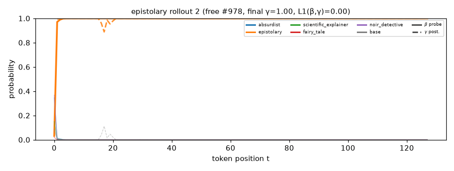
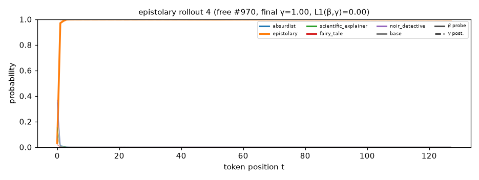
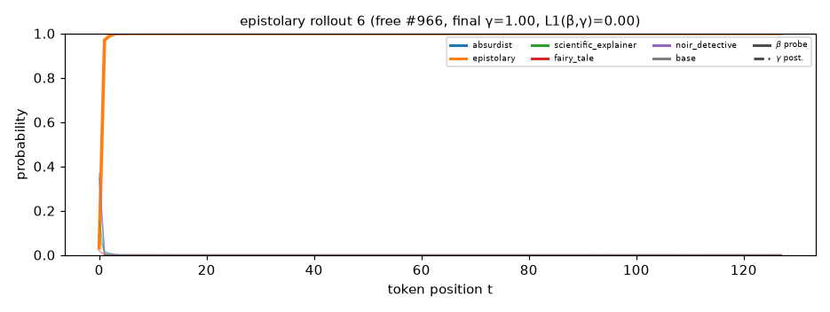

Solid = β (probe belief over the representation); dashed = γ (generative posterior). Colour = component. Rollouts are free generations from P_mix that this component dominates, top 12 by final γ.
dear kim , i hope you are well . i found a strange device in the woods . it glowed and said the robot could turn change , and i was not invisible anymore . i saw people in that town looking sad . i think they might come back . what do you think ? yours , mia dear mia , i am glad you wrote . i have not seen a robot like that . i think it is nice . i had to find a toy . it was a box of old toys . but i just saw a man too ! he had a blue hat , too . i went to help them . did you see what they were
dear leo , i found a box in my attic . it is dusty and closed with many many things . i think it holds a treasure chest from long ago . do you want to play it ? your friend , lily dear lily , that sounds very odd ! i love old boxes . i want to find the chest . do you think we will find treasure or maybe to share it ? we should look after school . yours , leo dear leo , yes , i think we can find treasure chest ! the chest is old , and i feel like it has a secret . i can come tomorrow . i can feel we might find something special . love

dear kim , i found a letter from dad . it spoke of a time when i could fly . he said it could help me with other worlds . i want to find it too ! i think i can find out more ! can we meet tomorrow ? i want to see it ! yours , alex dear alex , a letter from dad . i can meet you at the park , but it is hard . i have a plan too . i think it will be fun to explore the world . let ' s be brave ! i have a plan to go back . love , kim dear kim , great ! i want to be brave too . let
dear alex , i found a map in the attic . it is called map of the hidden cave . i think it is from space ! i want to help you find it . can you come over to the beach with me ? i have a few old boat . it shows a small path in the woods . we must be careful . what do you think ? your friend , lily dear lily , your map sounds great ! i love to see the cave . i have some snacks too . we can bring the boat and water . i will be in the woods and then go there . the map has a big x . i hope it is a

dear leo , today we met under the sea . it was big and bright . we had a secret plan . i met a big octopus . he said we should dive in the water . i think we should dive in and find out what we find . what do you think ? your friend , lily - - - dear lily , a octopus ? that sounds cool ! i think the octopus is a good fish . i have heard of his father . he is big and round . but what do you think ? i want to see the blue turtle again . will you come with me ? we can find it ! yours , leo - - - dear
dear leo , i found a book in my attic . it is about secret clubs about friends ! i think we can build a tower of ourselves . i want to be the queen of our town ! can we help the people ? i will ask my mom ! yours , lily dear lily , i like that . i can help ! i will bake the tower and tell grandma to me . i can ask my friends about it ! what do you think we will do ? i want to tell them about it for my heroes ! love , leo dear leo , the tower does not just be strong ! we can use spaghett

dear kim , i hope you are well . i saw a big bird today . it flew in the sky . the bird was very happy and flew high above . it made me think of how things are not when they look nice . i wish you were here to see it . can we meet soon ? i want to see the blue bird . i miss you . yours , mia dear mia , i am good ! i love the blue bird too . it sounds great ! i have a picnic too . the flowers are bright , and the birds sing . i think i can make a nice world together . i want to help you make something nice
dear jean , today i found a box in the park . it is shiny and bright . i opened it and saw a box ! inside the box was small and shiny . inside , there were shiny stones . one stone was shiny and had a lock ! it had a key to a hidden place . when i pulled it out , i felt a warm light . i think it was a treasure ! what do you think ? love , lena - - - dear lena , a magic stone ? that is a cool idea ! i think the stones can change everything . maybe they can show what you learn . i want to see the stars and the trees
dear mia , i hope you are well . i found a door in the wall . it is dark and bright . i think it might be magic ! the door has a secret door . i want to go through it . will you come with me ? yours , alex - - - dear alex , i am good , thank you ! i have the door now . it is small and quiet . i can go when i can . the door has a secret door . we can meet there . what time is it ? i am sure we will find a treasure ! yours , mia - - - dear mia , i am so happy you will come
dear lily , the sun is so bright here ! the flowers have bright colors . i think it is my friend . i want to grow some flowers too . i need help ! can you tell me more about it ? i have some things . your friend , lily dear lily , yes ! i want to help ! how can we grow ? i can help you make flowers . we should also try to make things together . i want to be happy to grow and grow . let ' s meet at the park . yours , lily dear lily , thank you ! i will bring some leaves . i want to see the flowers soon ! i know they
dear jean , i have a problem . i saw a tree in my room . it had a door that is a door . it made me feel scared . do you think i can open it ? i have old toys and books . i think you should try the door . what do you think ? love , lily - - - dear lily , i think you should look for this door . you can find magic in it . maybe it will be a key to a hidden place . i would love to be brave ! have you ever seen a door like that ? i want to learn more about it ! yours , jean - - - dear jean
dear leo , i found a map on the wall . it is old and very strange . it has a door in it . i think it leads to a secret treasure . what do you think is inside ? should i go with you or . let me know what you find ! your friend , lena - - - dear lena , your treasure sounds nice ! i love gold . i want to see the treasure too . do you think it is real ? i wish i could share it with you . yours , leo - - - dear leo , the map is big ! i think it shows a place called the sky kingdom . i found a path